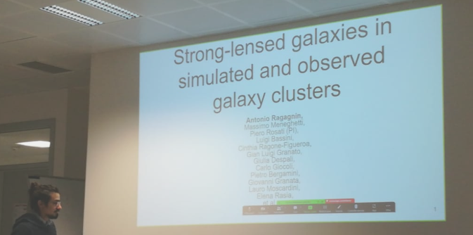
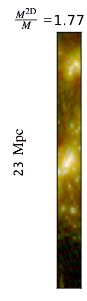
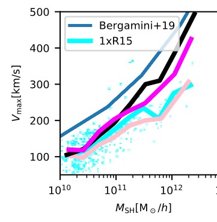
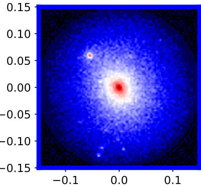
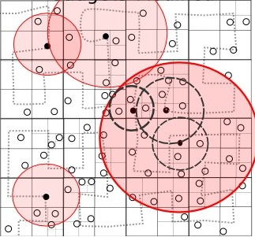
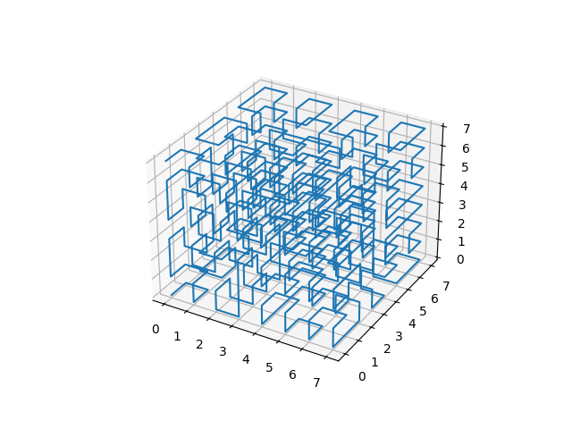
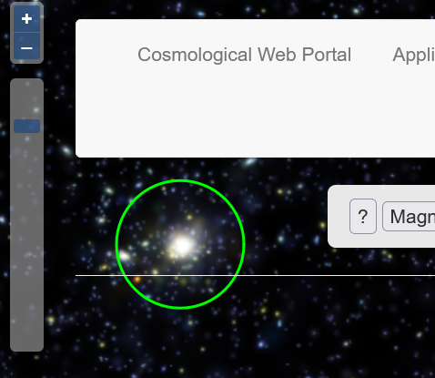
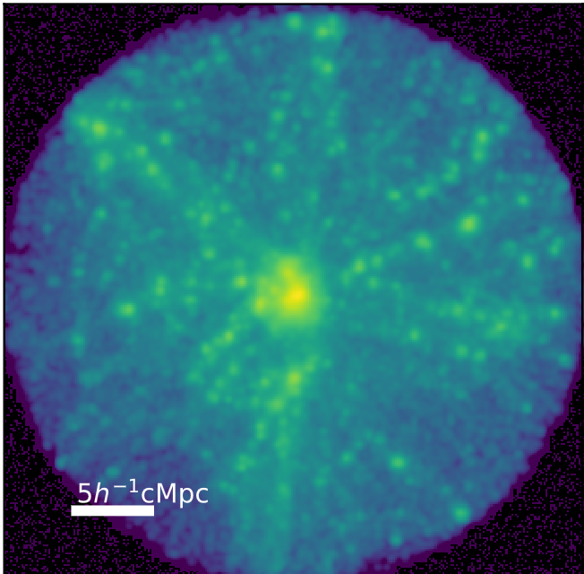
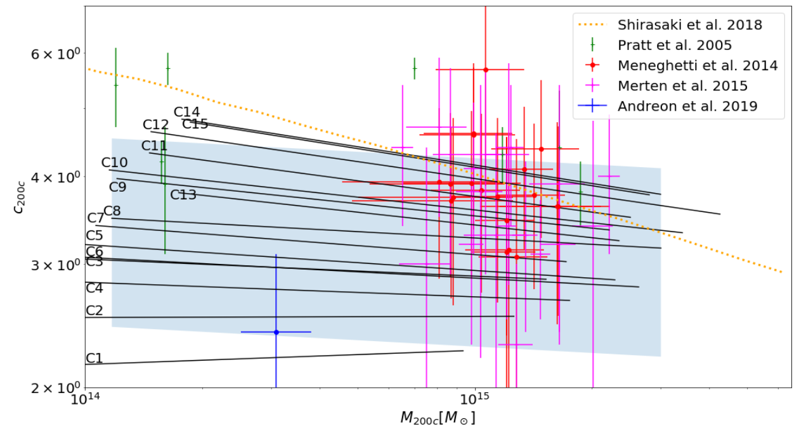
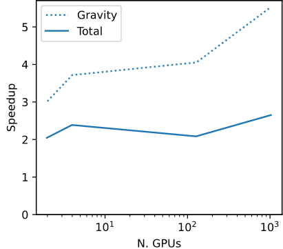

My track record

Download my Curriculum Vitae (updated at December 2025)
Check my SAO/NASA ADS complete list of pubblications
Check my ORCiD 0000-0002-8106-2742
1INAF-Osservatorio Astronomico di Trieste, Via G. B. Tiepolo 11, 34143 Trieste, Italy
★antonio.ragagnin@inaf.it
I am a postdoc at INAF-Trieste. I specialize in cosmological hydrodynamic simulations, zoom-in simulations of galaxy clusters, high-performance computing (HPC), GPUs, self-interacting dark matter, projection effects, gas poor galaxy clusters, and multi-wavelength mock observations (X-ray, SZ, optical, as well as derived weak and strong lensing signals).
Collaborations: Euclid, Magneticum, OpenGadget3, HydroSims, Darkium


I am the lead author of a paper for the Euclid Collaboration: Ragagnin et al. (2025). Within this collaborative effort between observational and simulation teams, I produced mock observations from various multi-wavelength data sources (X-ray, SZ, optical, and inferred weak lensing signals). The paper presents a Euclid-tailored covariance matrix for realistic mock observations across these wavelengths and explores the impact of projection effects, which will assist future cosmology studies based on multi-wavelength observations.

Meneghetti et al. (2020) showed how galaxy-galaxy strong lensing observations of substructures in cluster cores are much more compact than observations. In Ragagnin et al. (2022a), we showed that AGN physics can only improve the situation at the price of producing much worser stellar mass functions. No current ΛCDM simulation reproduce the observed cores of galaxy clusters. This is closely linked to the fact that most hydrodynamic simulations tend to overestimate BCG masses.

It is well known that X-ray observations may be biased toward peaked and centrally concentrated gas distributions, potentially missing a population of X-ray faint objects. In Ragagnin et al. (2022b), I found that clusters that are X-ray faint are gas-poor because they are old and relaxed, thus allowing sufficient time for the gas to be depleted.

SIDM is a particle-physics-motivated dark matter model and can strongly influence the evolution of halos. In Ragagnin et al. (2024), we present on of the first simulation suites (based on Dianoga ICs; see Bonafede et al. 2011) of galaxy clusters with SIDM, where we show how it significantly affects the abundance of satellites.

During my PhD I worked on identifying and solving Gadget3 bottlenecks to allow running large simulations. The bottleneck was the tree-walk based neighbour search. We solved it with a brilliant idea (Ragagnin et al., 2016): exploit that particles are ordered following a space-filling curve and nearby particles in memory are also nearby particles in space.
📝 See more detailed post.

I am developing a flexible and modular new implementation of a Gadget-like code (temporary project name: hotwheels), incorporating over a decade of experience working with HPC. It is designed to leverage multicore and GPU architectures, with a strong emphasis on modularity and miniapps, which are essential for collaboration with HPC facilities and GPU vendors.
The c2papcosmosim.uc.lrz.de web portal to allows to explore Magneticum simulation results and submit mock-observation jobs through a dedicated computing queue. It features a user-friendly graphical interface to navigate large simulated volumes, perform complex queries on galaxy cluster catalogs, and execute specific post-processing tasks (see Ragagnin et al. 2017).

The repository contains a collection of Python tools for reading and post-processing Gadget2/3 snapshots, particularly for Magneticum outputs (including the INFO block), and efficiently handling FoF/SubFind catalogs. This repository includes core routines (g3read.py) that combine elements of Pynbody and ported legacy Klaus IDL routines. The library utilizes the GadgetFile class from Pynbody. If available, g3read will also leverage Numba for optimized performance.

The package hydro_mc implements the Ragagnin et al. (2021) conversion of mass, concentration, and sparsity parameters between virial and overdensities of Δ = 2500, 500, and 200 (both mean and critical). See the hydro_mc web app or the repo github.com/aragagnin/hydro_mc.

I ported the integration of various Gadget (OpenGadget3, Gadget3) physics integrators (gravity, SPH density, SPH hydrodynamics, and thermal conduction) on GPUs with OpenACC This was a significant collaborative effort, involving multiple hackathons and long-term partnerships with CSCS, PGI, and NVIDIA (see my CV). For further details, see my paper: Ragagnin et al. (2020).Resources: youtube presentation recording
 See the presentation
See the presentation